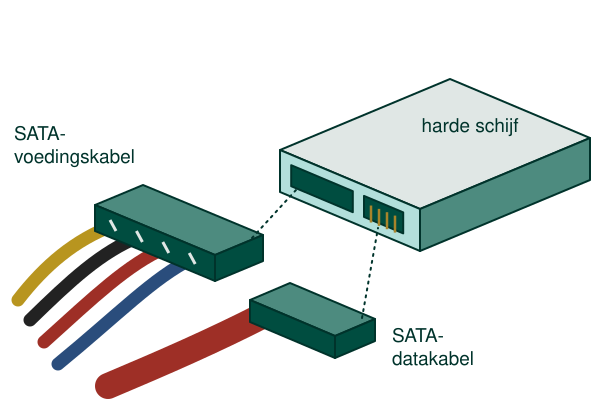
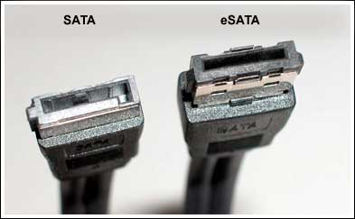
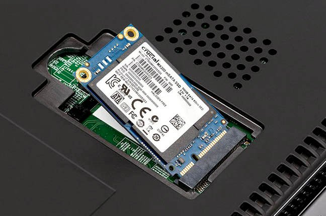

Hoewel PATA tot 2003 een veelgebruikte standaard was vind je deze, gelukkig, in een moderne computer niet meer terug. De PATA interface is traag, complex door het master / slave / cable select gegeven en de ribbon kabels beletten de luchtstroom in een computerkast waardoor koeling moeilijk wordt.

De SATA of Serial Advanced Technology Attachment standaard lost bovenstaande problemen grotendeels op. Toegegeven, voor huidige SSD's wordt zelfs SATA te traag en schakelt men over op andere technologieën. Daarover later meer.
Het eerste probleem wat SATA oplost is de complexe configuratie van master / slave. Terwijl op een PATA kabel twee apparaten aangesloten konden worden kan er bij SATA slechts één aangesloten worden. Hierdoor hoeft de bandbreedte van de kabel niet meer gedeeld te worden wat de snelheid ten goede komt.
Daarnaast had je bij PATA vaak een primaire en secundaire aansluiting op het moederbord waardoor je in totaal maximum vier opslagapparaten kon verbinden. Bij SATA is deze limitatie er niet en het aantal opslagapparaten is deze keer beperkt door het aantal SATA poorten die je kan terugvinden op het moederbord. Moest dit niet voldoende zijn bestaan er PCIe kaarten waardoor je nog meer opslagapparaten kan verbinden met jouw systeem.
Een ander voordeel is dat SATA opslagapparaten verwisseld kunnen worden terwijl de computer ingeschakeld is. Dit principe noemt men hot swappable. Dit is uiteraard een zeer handige eigenschap in kritieke bedrijfstoepassingen en vooral in combinatie met RAID (zie later). Het nadeel is dat je hiervoor een aangepaste computerkast nodig hebt die je toelaat om makkelijk de apparaten te verwijderen en terug te plaatsen. Vaak zitten nog andere onderdelen in de weg waardoor het systeem toch uitgeschakeld moet worden.
SATA I ofwel SATA 1.5 Gb/s was de eerste generatie SATA interface. De maximum doorvoorsnelheid die werd ondersteund door de interfaces was 150 MB/s.
SATA II ofwel SATA 3 Gb/s was de tweede generatie SATA interface. De doorvoersnelheid is deze keer verdubbeld naar maximum 300 MB/s.
SATA III ofwel SATA 6 Gb/s is de derde generatie SATA interface. Opnieuw is de doorvoersnelheid verdubbeld naar maximum 600 MB/s.
Misschien vraag je je af vanwaar de grote verschillen komen tussen 6 Gb/s en 600 MB/s.
Eerst en vooral moeten we opmerken dat de eenheden verschillen. De ene keer gaat het over bits en de andere keer over bytes. Zoals je weet is 6 Gb/s gelijk aan 750 MB/s. De 150 MB/s is de overhead zoals bijvoorbeeld controle gegevens en de overige 600 MB/s is de effectieve data die verstuurd wordt.
Alle SATA standaarden zijn achterwaarts compatibel. Dit wil zeggen dat je gerust een SATA II harde schijf kan aansluiten op een SATA III moederbord en omgekeerd. Uiteraard zal de snelheid beperkt worden tot de laagste standaard.
Een moderne SSD haalt de doorvoersnelheid van 600 MB/s probleemloos waardoor de SATA standaard vervangen wordt.
Door de hot swappable eigenschap is het mogelijk om opslagapparaten zomaar los te koppelen van een actief systeem en terug te verbinden. Beelden we ons een harde schijf in als opslagapparaat dan zou deze zich kunnen gedragen als een grote USB stick.
Om deze reden werd de eSATA variant ontworpen, harde schijven konden extern aangesloten, verwisseld worden en met een kabellengte van maximum twee meter konden deze zelfs vrij ver van de computerkast verwijderd zijn.
Nadeel van deze standaard is dat de connector verschilt van de interne connectoren waardoor deze niet uitwisselbaar zijn.

In mobiele apparaten zoals laptops is er zodanig weinig plaats dat zelfs de kleine SATA kabels te groot zijn geworden. mSATA harde schijven worden daardoor direct op het moederbord aangesloten waardoor geen kabel meer nodig is.
